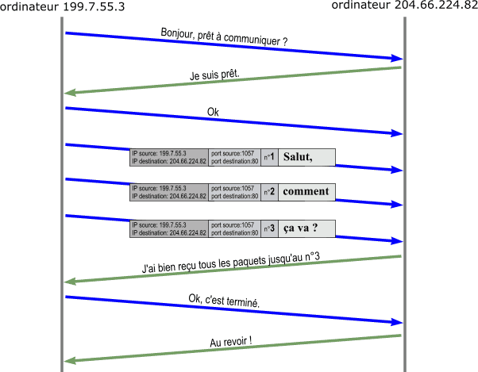

Le protocole TCP ou Transmission Control Protocol est un protocle de transport fiable stateful (avec état) donc muni d'une connexion définit dans la RFC 793. Dans le modèle inernet, ce protocole est aussi appelé TCP/IP.
TCP vérifie que le destinataire est prêt à recevoir les données. Puis, il décompose les gros paquets de données en paquets plus petits pour que IP les accepte avant de numéroter les paquets et, à la réception de vérifier qu'ils sont tous bien arrivés, de redemander les paquets manquants et de les réassembler avant de les données aux logiciels. Des accusés de réception ont mêmes envoyés pour prévenir l'expéditeur que les données sont bien arrivés. De plus, il utilise une technique de connexion appellée "three-way handshake" qui permet de vérifier que la source est bien celle à qui on désire envoyer les données. Il prend également du temps sur le réseau pour envoyer les données à cause du système d'accusé de réception et du système qui s'assure que le destinataire répond toujours.
Principe de fonctionnement de TCP

Cette illustration nous montre de quelle manière fonctionne le protocole TCP communiquant avec un ordinateur (celui à qui on compte envoyer les données).
Le protocole UDP ou User Datagram Protocol est un protocole de transport peu fiable mais rapide et il n'est pas muni d'une connexion. De plus, il est définit dans la RFC 768.
UDP est plus simple que le protocle TCP car il ne vérifié pas si les données sont bien arrivées ni même si elles sont arrivées dans l'ordre et s'il n'en manque pas. C'est ce qui le rend plus simple étant donné qu'il n'utilise pas ce système de vérification du transfert des données. Il ne fait donc que transmettre les données voulues (même si celle-ci ont beaucoup moins de sûreté d'arriver dans leur ordre premier donc l'odre voulu ou même d'arriver tout simplement). Cependant, au contraire de TCP, il prend moins de temps sur le réseau.
| / | TCP | UDP |
|---|---|---|
| Sigle | Transport Control Protocol | User Datagram Protocol |
| RFC (=norme) | 793 | 768 |
| Contrôle des paquets | Envoie des accusés de réception | Sans aucun contrôle de réception des données donc aucune fiabilité |
| Rapidité | Plus lent que UDP à cause de son système de vérification des données (via les accusés de réception) | Très rapide |
| Sécurité | Très sécurisé (via la technique de connexion "three-way handshake") | Aucune sécurité |